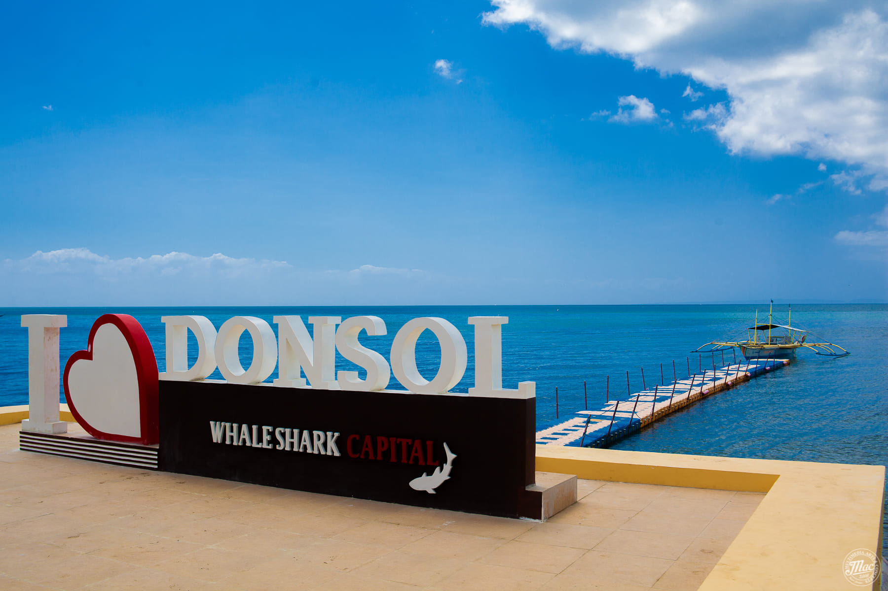
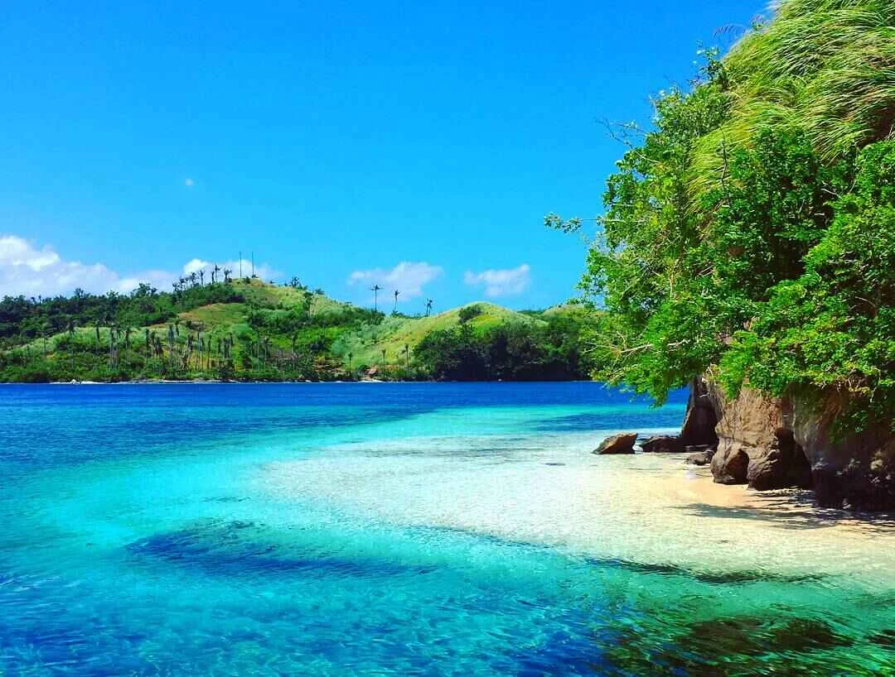
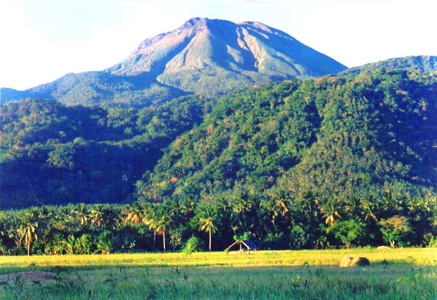

Donsol
Whale Shark Watching
Swim alongside the world's largest fish in the nutrient-rich waters of Donsol Bay — a globally-acclaimed responsible wildlife experience.
Learn moreWhere whale sharks glide through warm bays, a volcano watches over crater lakes, and every shore tells a story of sea and stone.
Explore the Province Meet the Butanding
Sorsogon sits at the southern end of the Bicol Peninsula, bounded by the Pacific Ocean to the east and the San Bernardino Strait to the south. Its name comes from the Bikol word surusuog — "a place often visited by strangers."
The province is home to the world-famous whale shark aggregation in Donsol Bay, the active Bulusan Volcano, pristine black-sand beaches in Matnog, and one of the Philippines' most vibrant festival traditions.
Read the History

Swim alongside the world's largest fish in the nutrient-rich waters of Donsol Bay — a globally-acclaimed responsible wildlife experience.
Learn more
From Subic's dramatic black volcanic sand to Punta's long white surf breaks — Sorsogon's 200km coastline delights every kind of beach lover.
Learn moreTrek through old-growth rainforest to a crater lake, soak in geothermal springs, and breathe in one of the Philippines' most scenic natural parks.
Learn more